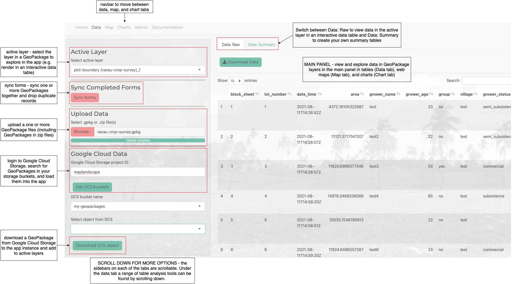
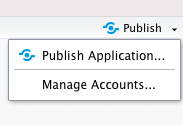

A package that provides functions for building Shiny dashboard applications to explore and visualise spatial layers in GeoPackages.
A pre-built Shiny is provided with this package which uses these functions and provides tools for:
This package was developed as part of the Livelihoods and Landscapes project which is developing tools and approaches to map diverse agricultural landscapes. The initial motivation for developing the package and Shiny application was to provide analysts with tools to analyse and visualise geospatial data collected ‘in the field’ using the QField mobile GIS application.
The vignettes provide a range of tutorials for exploring and analysing data in GeoPackages using the maplandscape app.
The figure below provides an overview of the UI for the maplandscape app provided with this package.

Install as an R package:
install.packages("devtools")
devtools::install_github("livelihoods-and-landscapes/maplandscape")Build and customise your own Shiny application using functions provided by maplandscape or launch a pre-built application:
dir <- system.file("app", package = "maplandscape")
setwd(dir)
library(maplandscape)
shiny::shinyAppDir(".")The will launch a pre-built Shiny application to explore data in GeoPackages from the inst/app sub-directory of the package.
RStudio offers a free-tier hosting service for Shiny apps. Sign up at shinyapps.io.
Follow the above commands to launch maplandscape (or your custom Shiny application). In the top-right of the application window you will see a Publish button, click this button and follow the prompts to deploy the application to shinyapps.io.

RStudio provide a detailed tutorial for deploying apps to shinyapps.io here.
Clone the maplandscape GitHub repo:
git clone https://github.com/livelihoods-and-landscapes/maplandscape.git
cd maplandscapeThere is a sub-directory named docker. This contains a Dockerfile that lists instructions that are used to build a docker image.
cd docker
docker build -t maplandscape .The image is based on the rocker/shiny:latest image which includes Shiny Server to host the maplandscape Shiny application. Shiny Server serves apps out of the srv/shiny-server/ directory; building the docker image will install all the R packages required to run maplandscape, install the maplandscape package from github, and copy an app.R script into srv/shiny-server/app which contains the commands to launch maplandscape.
A customised shiny-customised.config file is used to set the app_dir to the app directory where Shiny Server will launch and serve the app from.
Launch the docker container:
docker run -p 3838:3838 maplandscapeYou can find more information about Shiny Server here, at its GitHub repo, and following this tutorial.
Please see the vignette Deploy: Google Cloud for a tutorial demonstrating how to deploy a containerised Shiny application on Google Cloud Run.